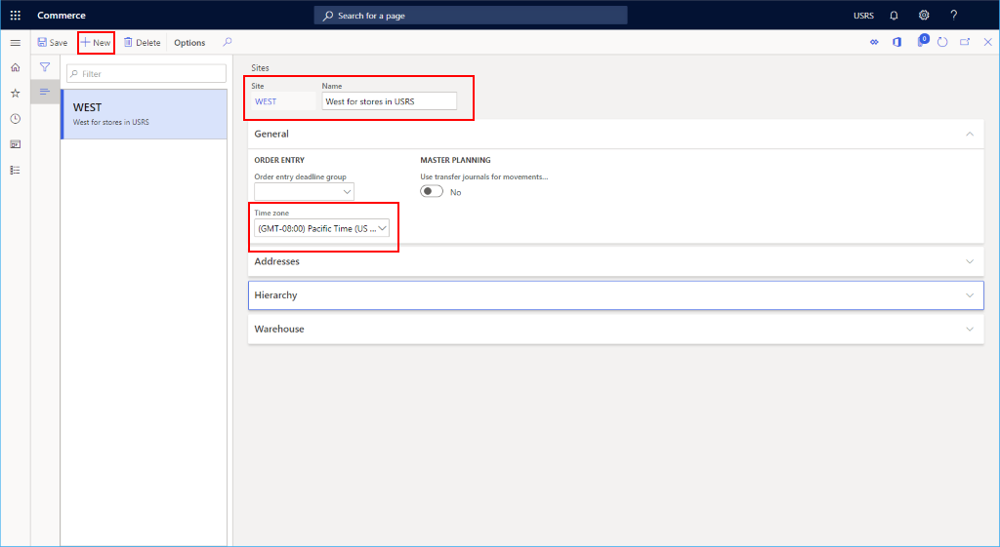
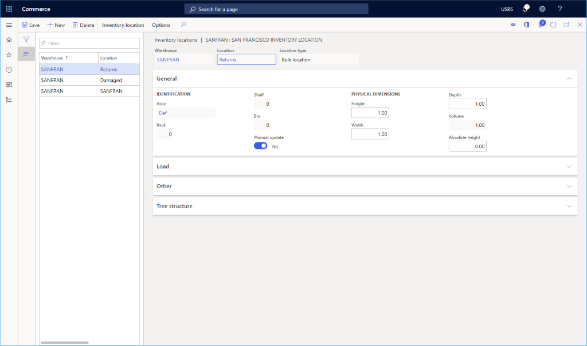
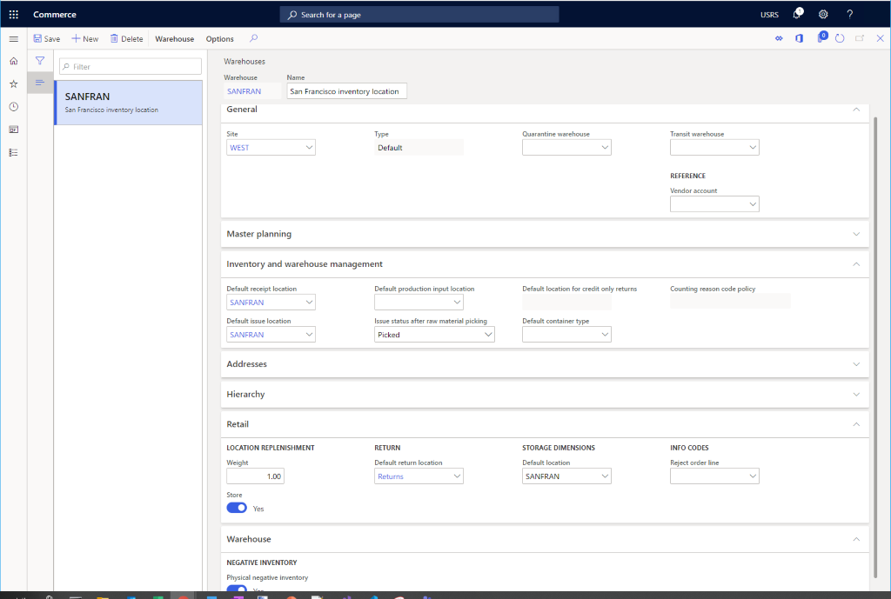

Lagerort einrichten
Important
Dynamics 365 Retail ist jetzt Dynamics 365 Commerce und bietet umfassende Handelsfunktionen für alle Kanäle – von E-Commerce über Shops bis hin zu Callcentern. Weitere Informationen zu diesen Änderungen finden Sie unter Microsoft Dynamics 365 Commerce.
In diesem Thema wird beschrieben, wie Sie einen Lagerort für die Verwendung mit einem neuen Kanal in Microsoft Dynamics 365 Commerce einrichten.
Übersicht
Jedem Commerce-Kanal muss ein konfigurierter Lagerort zugeordnet sein. Die folgenden Verfahren bieten die Mindestkonfiguration, die zum Einrichten eines Lagerorts für einen Commerce-Kanal erforderlich ist. Weitere Informationen zur Einrichtung des Lagerorts finden Sie in der Übersicht über die Lagerortverwaltung.
Standort eines Lagerorts konfigurieren
Vor dem Einrichten eines Lagerorts müssen Sie den Standort eines Lagerorts konfigurieren.
Gehen Sie folgendermaßen vor, um den Standort eines Lagerorts zu konfigurieren.
- Gehen Sie im Navigationsbereich zu Module > Retail und Commerce > Kanaleinrichtung > Standorte.
- Wählen Sie im Aktivitätsbereich Neu aus.
- Geben Sie im Feld Standort einen Wert ein.
- Geben Sie im Feld Name einen Wert ein.
- Legen Sie im Abschnitt Allgemeines die entsprechende Zeitzone fest.
- Geben Sie im Abschnitt Adressen eine Adresse ein.
- Wählen Sie im Aktionsbereich Speichern aus.
Das folgende Bild zeigt ein Beispiel für den Standort eines Lagerorts.

Einen Lagerort einrichten
Um einen Lagerort einzurichten, gehen Sie folgendermaßen vor:
- Gehen Sie im Navigationsbereich zu Module > Retail und Commerce > Kanaleinrichtung > Lagerorte.
- Wählen Sie im Aktivitätsbereich Neu aus.
- Geben Sie im Feld Lagerort einen Wert ein. Wenn es sich um eine 1:1-Zuordnung zu einem Geschäft handelt, sollten Sie den Namen des Geschäfts oder den Namen eines regionalen Vertriebszentrums verwenden.
- Geben Sie im Feld Name einen Wert ein.
- In der Dropdown-Liste Standort wählen Sie den zuvor erstellten Standort des Lagerorts aus.
- Wählen Sie im Feld Typ die Option Standard.
- Wenn Sie ein Quarantänelager einrichten möchten, führen Sie zunächst die folgenden Schritte aus, um einen zusätzlichen Lagerort zu erstellen, in dem der Typ auf Quarantäne eingestellt ist.
- Wenn Sie ein Transitlager einrichten möchten, führen Sie zunächst die folgenden Schritte aus, um einen zusätzlichen Lagerort zu erstellen, in dem der Typ auf Transit eingestellt ist.
- Wählen Sie im Aktionsbereich Speichern aus.
Lagergänge einrichten
Gehen Sie zum Einrichten von Lagergängen folgendermaßen vor:
- Gehen Sie im Navigationsbereich zu Module > Retail und Commerce > Kanaleinrichtung > Standorteinrichtung > Lagergänge.
- Wählen Sie im Aktivitätsbereich Neu aus.
- In der Dropdown-Liste Lagerort wählen Sie den zuvor erstellten Lagerort aus.
- Geben Sie im Feld Gang einen Namen ein (beispielsweise „Def”).
- Geben Sie im Feld Name einen Namen ein (beispielsweise „Standardgang”).
- Wählen Sie im Aktionsbereich Speichern aus.
Standorte für Lagerort-Lagerplätze einrichten
Führen Sie die folgenden Schritte aus, um Lagerorte für Standard-, beschädigte und zurückgegebene Bestände einzurichten.
- Gehen Sie im Navigationsbereich zu Module > Retail und Commerce > Kanaleinrichtung > Lagerorte.
- Wählen Sie den Lagerort aus, den Sie zuvor erstellt haben.
- Wählen Sie im Aktionsbereich Bearbeiten aus.
- Wählen Sie im Aktionsbereich Lagerort und dann Standort des Lagerorts aus.
- Wählen Sie im Aktivitätsbereich Neu aus. Die Dropdown-Liste Lagerort sollte standardmäßig in Ihrem neuen Lagerort angezeigt werden.
- Im Feld Gang geben Sie den Namen des zuvor angegebenen Gangs ein.
- Stellen Sie Manuelles Update auf Ja
- Geben Sie im Feld Standort den Namen des Lagerorts ein.
- Wählen Sie im Aktionsbereich Speichern aus.
- Wählen Sie im Aktivitätsbereich Neu aus. Die Dropdown-Liste Lagerort sollte standardmäßig in Ihrem neuen Lagerort angezeigt werden.
- Im Feld Gang geben Sie den Namen des zuvor angegebenen Gangs ein.
- Stellen Sie Manuelles Update auf Ja
- Geben Sie im Feld Lagerort „Beschädigt“ ein.
- Wählen Sie im Aktionsbereich Speichern aus.
- Wählen Sie im Aktivitätsbereich Neu aus. Die Dropdown-Liste Lagerort sollte standardmäßig in Ihrem neuen Lagerort angezeigt werden.
- Im Feld Gang geben Sie den Namen des zuvor angegebenen Gangs ein.
- Stellen Sie Manuelles Update auf Ja
- Geben Sie im Feld Lagerort „Retouren“ ein.
- Wählen Sie im Aktionsbereich Speichern aus.
Die folgende Abbildung zeigt eine Einrichtung eines Lagerort-Standorts in San Francisco.

Vollständige Einrichtung eines Lagerorts
Führen Sie zum Abschließen der Einrichtung eines Lagerorts die folgenden Schritte aus.
- Gehen Sie im Navigationsbereich zu Module > Retail und Commerce > Kanaleinrichtung > Lagerorte.
- Wählen Sie den Lagerort aus, den Sie zuvor erstellt haben.
- Wählen Sie im Aktionsbereich Bearbeiten aus.
- Unter Bestands- und Lagerortverwaltung:
- Stellen Sie Standard-Zugangslagerplatz auf den oben erstellten Standardstandort.
- Wählen Sie Standard-Abgangslagerplatz als den oben erstellten Standardstandort.
- Geben Sie im Abschnitt Adressen eine Lageradresse ein.
- Im Abschnitt Einzelhandel:
- Geben Sie im Standard-Rückgabeort den zuvor erstellten Rückgabeort ein.
- Stellen Sie Geschäft auf Ja.
- Legen Sie Gewicht auf 1.00 fest.
- Geben Sie im Feld Lagerdimensionen den zuvor erstellten Standardlagerplatz ein.
- Setzen Sie im Abschnitt Lagerort die Option Negativbestand auf Ja.
- Wählen Sie im Aktionsbereich Speichern aus.
Das folgende Bild zeigt Details für einen konfigurierten Lagerort.

Zusätzliche Ressourcen
Lagerortverwaltung – Übersicht
Voraussetzungen der Kanaleinrichtung